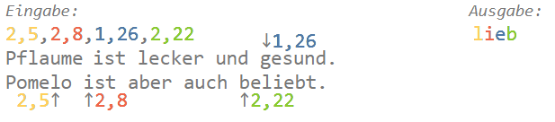

Schreibe ein Programm:
Ein Text wurde mit dem Verfahren "Buchverschlüsselung" verschlüsselt. Das Programm soll den Text wieder
entschlüsseln.
Bei der Buchverschlüsselung ersetzt der Absender die Buchstaben des Textes durch ihre Position (z.B. "42.
Buchstabe") in einem Buch. Zur Entschlüsselung benötigt der Empfänger die Positionsangaben als Schlüssel, um
die im Buch gefundenen Buchstaben wieder zu einem Text zusammen zu setzen.
In der ersten Zeile der Eingabe steht der Teil des Buches, auf den sich die Positionsangaben in den
folgenden
Zeilen beziehen.
Das Programm soll den entschlüsselten Text in einer Zeile ausgeben.
Hinweis: Bevor du eine Variable benutzen kannst, musst du ihr einen Wert zuweisen.
Bei der Buchverschlüsselung ersetzt der Absender die Buchstaben des Textes durch ihre Position (z.B. "42.
Buchstabe") in einem Buch. Zur Entschlüsselung benötigt der Empfänger die Positionsangaben als Schlüssel, um
die im Buch gefundenen Buchstaben wieder zu einem Text zusammen zu setzen.
In der ersten Zeile der Eingabe stehen die Positionsangaben durch Kommata getrennt.
In der zweiten Zeile steht der Teil des Buches, auf den sich die Positionsangaben beziehen.
Das Programm soll den entschlüsselten Text in einer Zeile ausgeben.
Bei dieser Buchverschlüsselung ersetzt der Absender die Buchstaben des Textes durch ihre Position (z.B. "1.
Zeile, 42.
Buchstabe") in einem Buch. Zur Entschlüsselung benötigt der Empfänger die Positionsangaben als Schlüssel, um
die im Buch gefundenen Buchstaben wieder zu einem Text zusammen zu setzen.
In der ersten Zeile der Eingabe stehen die Positionsangaben durch Kommata getrennt.
Diese besteht diesmal aus zwei Teilen:
Zuerst die Textzeile, dann die Position in dieser Textzeile.
In den folgenden Zeilen steht der Teil des Buches, auf den sich die Positionsangaben beziehen.
Das Programm soll den entschlüsselten Text in einer Zeile ausgeben.
Hinweis: Bevor du eine Liste mit Werten füllen kannst, musst du eine leere Liste erzeugen. Ein Beispiel für
die
Positionsangaben findest du unter "weitere Hinweise".
Beispiel:

Beachte: Dein Programm muss mit allen Testfällen zurechtkommen.